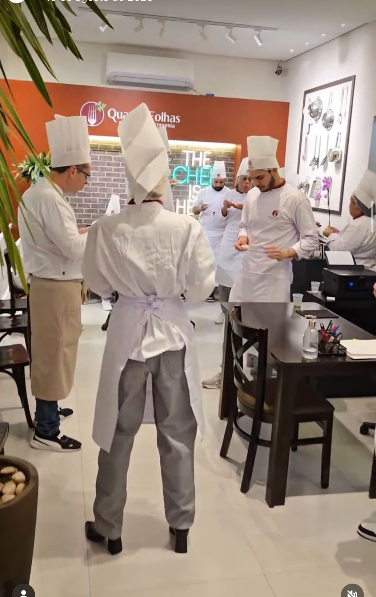
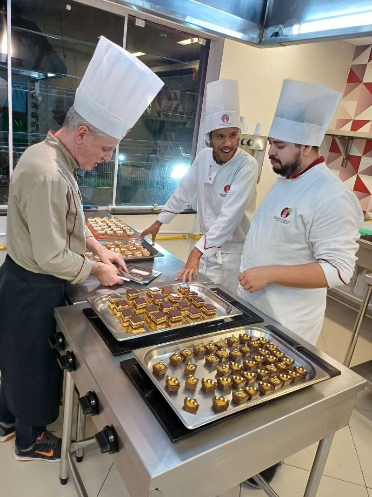

O Mini Chef tem proposta de aprendizado, diferente de uma festa ou ação pontual.
Curso infantil
Mini Chef: gastronomia para crianças aprenderem fazendo
Um curso para crianças viverem a cozinha de forma segura, criativa e acompanhada, desenvolvendo autonomia, organização, repertório alimentar e convivência.
Curso infantil
Aulas práticas
Turmas por idade
Ambiente preparado
A criança participa do preparo, entende etapas e ganha confiança na cozinha.
A programação organiza grupos considerando faixa et?ria, ritmo e nível de autonomia.
A equipe retorna com próximas turmas, horários e orientações para inscrição.
Aprendizado
Cozinhar também é desenvolver autonomia
O Mini Chef usa a gastronomia como experiência prática: a criança participa, experimenta, organiza, cria e aprende a respeitar etapas.
Mão na massa
A criança participa do preparo, entende etapas e ganha confiança na bancada.
Ingredientes e cores
Receitas, texturas e apresentações estimulam curiosidade e imaginação.
Aprender em grupo
A aula trabalha colaboração, espera, escuta e cuidado com o espaço compartilhado.
Relação com alimentos
A criança se aproxima dos ingredientes de um jeito leve, positivo e prático.
Para os pais
Um curso conduzido em ambiente de escola de gastronomia
Ambiente preparado
As atividades acontecem em estrutura de cozinha escola, com organização e acompanhamento.
Faixa et?ria
As turmas são pensadas por idade para preservar ritmo, linguagem e nível de autonomia.
Comunidade
O curso cria continuidade: a criança volta, evolui e reconhece a cozinha como lugar de descoberta.
Como é a turma
Um percurso infantil simples de entender
A programação acompanha per?odos, f?rias e calendário da escola, mantendo uma jornada simples para o respons?vel acompanhar.
M?duloexperiênciaDesenvolveFormatoObservação
1Primeiros preparosOrganização, higiene e bancadaAula práticaEntrada acolhedora.
2Massas e montagensCoordenação, criatividade e etapasmão na massaReceitas l?dicas.
3Doces e finalizaçõesCores, textura e apresentaçãoConfeitaria simplesResultado visual.
4Mesa e degustaçãoConvivência e cuidadoCompartilhamentoFechamento da jornada.
Não confundir
Mini Chef, festa infantil e escolas são caminhos diferentes
Curso, festa e projeto educacional têm objetivos diferentes para a criança e para a Família.
Mini Chef
Turmas recorrentes ou por temporada, com foco em aprendizado, desenvolvimento e continuidade.
Consultar turmasFesta infantil gastronômica
Uma Comemoração personalizada em que a criança celebra com convidados colocando a mão na massa.
Conhecer festaAulas para escolas
Projetos para escolas particulares na unidade Quatro Folhas ou no espaço da escola.
Ver escolasFotos e estrutura
A experiência acontece dentro de uma escola de gastronomia
Imagens da própria Quatro Folhas reforçam confiança, estrutura e presença.



Turmas
Consulte as próximas turmas do Mini Chef
Nossa equipe retorna pelo WhatsApp com datas, horários, faixa et?ria, disponibilidade e orientações para inscrição.